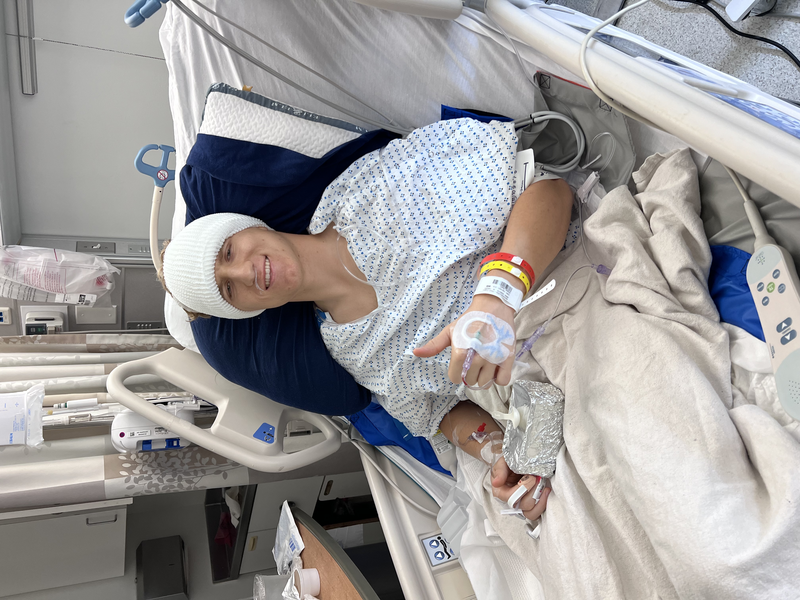

Health Agent Ecosystem
Not a concept. Not a prototype. A live, autonomous pipeline that runs every week and produces real outputs. After brain surgery, managing strain, sleep, nutrition, and seizure risk by hand wasn't sustainable. So I built five agents to do it instead — and haven't looked back.
What if you could —
And on top of that, what if it automatically —
Background
I had brain surgery two years ago after eight years of epileptic seizures. I've been seizure-free since — but the risk doesn't disappear. It's managed through a narrow set of variables: strain, sleep, nutrition, and stress. I'm an athlete constantly in training — running three marathons in six months.
No existing app could hold all of those variables at once and surface a clear picture of what my week should look like. So I built the agents myself — in Claude Code, from scratch, over the course of several months.
This isn't a side project. It runs every week. The outputs in this repo are real.

The Agents
Each agent handles one domain. They share state, inform each other's decisions, and are orchestrated weekly by a single command. Click any card to expand the full technical detail.
Architecture
pipeline-state.json is the connective tissue. Every agent reads from it and writes back to it. The Neurologist Agent runs last — it needs all upstream context before forecasting risk.
Live Outputs
These aren't screenshots of a demo. The scorecard and meal plan below are the actual outputs from the most recent pipeline run — live and interactive.
How it runs
Five agents execute in dependency order. Each one hands off context to the next. By the time the week starts, everything is already planned.
Shared State
Every agent writes its output here. Every downstream agent reads from it. One file connects the entire system.
Get in touch
This system was built to solve a personal problem. The architecture — multi-source ingestion, shared state, autonomous orchestration — applies anywhere risk needs to be monitored and acted on. I'm always open to a conversation.
The Neurologist Agent is a generalized risk monitor — it ingests multiple upstream signals, scores each domain independently, and surfaces a composite forecast with specific mitigations.
That pattern — multi-source ingestion → domain scoring → compounding risk detection → downstream overrides — maps directly to vendor risk, compliance monitoring, and incident response in any regulated industry.
This was built for a sample size of one. The infrastructure is ready for more.